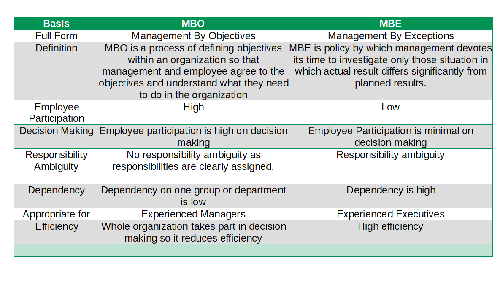

What is the main difference between Management By Objective(MBO) and Management By Exception(MBE)?
The main difference between Management By Objective(MBO) and Management By Exception(MBE) is MBO is a process through which specific goals are set collaboratively for the organization whereas MBE is policy by which management devotes its time to investigate only those situation in which actual result differs significantly from planned results.
Difference Between Table for MBO and MBE(MBO vs MBE in Table)
| Basis | MBO | MBE |
| Full Form | Management By Objectives | Management By Exceptions |
| Definition | MBO is a process of defining objectives within an organization so that management and employee agree to the objectives and understand what they need to do in the organization | MBE is policy by which management devotes its time to investigate only those situation in which actual result differs significantly from planned results. |
| Employee Participation | High | Low |
| Decision Making | Employee participation is high on decision making | Employee Participation is minimal on decision making |
| Responsibility Ambiguity | No responsibility ambiguity as responsibilities are clearly assigned. | Responsibility ambiguity |
| Dependency | Dependency on one group or department is low | Dependency is high |
| Appropriate for | Experienced Managers | Experienced Executives |
| Efficiency | Whole organization takes part in decision making so it reduces efficiency | High efficiency |
Management By Objective(MBO)
Peter F. Drucker proposed this concept. MBO is a process through which specific goals are set collaboratively for the organization as a whole and every unit and individual within it. Each individual's major area of responsibilities in term of expected of results are defined General Electric appears to be the first organization that implemented MBO. According to Peter Drucker: MBO is regarded as a system for improving performance, both of individual manager and enterprise as a whole by setting of goals at the corporate, departmental and individual manager's level. Robert Krether: MBO is a comprehensive management system based on measurable and anticipatively set objective. Stephen P. Robbins: A program that encompasses specific goals anticipatively set for an explicit time period with feedback on goal purpose.
Peter Ferdinand Drucker
Organizations are purposeful goal-oriented groups of persons. Therefore, goals or objectives should provide the focus for every activity. Each job in the organization must be directed towards the objectives of the organizations as a whole and the contribution of every individual must be judged by the contribution made towards the accomplishment of these objects. This concept was introduced by Peter F. Drucker in 1954 in his popular book The Practice of Management. Need for MBO arises because it serves as a unifying force. It is necessary to unify the effors of difference individuals towards the achievment of organizational goals.
Basic Principles of MBO
Unity of management action is more likely to occur when there is pursuit of a common objective. The greater the focus on results on a time scale, the greater likelihood of achieving them. The greater the participation in setting meaningful work with accountable results, the greater the motivation for completing it. These call for:
- Clarification of Organizational objectives
- Specific Objectives for each member.
- Participative Decision Making
- Explicit time period
- Performance Evaluation and feedback
Process of MBO
- Setting objectives
- Setting Employees' Targets
- Monitoring Performance
- Evaluating Performance
- Performance Based Incentives
Advantages of Management By Objective(MBO)
- Better Utilization of Resources
- Aid in Planning
- Better Team work
- Concentration on Key Result Areas
- Objective Evaluation
- Result orientation
- Sound Organizational Structure
Disadvantages of Management By Objective(MBO)
- Incurs Time and Cost
- Failure to teach MBO Philosophy to employees
- Problems in Objective Setting
- Emphasis on short-term Objectives
- Inflexibility
- Frustration of employees
MBO in Practice
You'll find MBO programs in many business, health care, educational, government, and nonprofit organizations. Most organizations, in fact, make some use of MBO features because managers find that goals give people direction and it doesn't make sense to establish goals and then fail to evaluate whether or not they're being achieved.
MBO's popularity should not be construed to mean that it always works. There area number of documented cases in which MBO was implemented but failed to meet management's expectations. A close look at those cases, however, indicates that the problems rarely lie with MEO's basic components. Rather, the culprits tend to be factors such as unrealistic expectations regarding results, lack of commitment by top management, and an inability or unwillingness by management to allocate rewards based on goal accomplishment. Nevertheless, MBO provides managers with the vehicle for implementing goal-setting theory.
Management By Exception
Management by Exception is a "policy by which management devotes its time to investigating only those situations in which actual results differ significantly from planned results”. In short management by exception means selectivity in work and priority in decisions known as employee involvement or participative decision making, encourages the involvement of stakeholders at all levels of an organization in the analysis of problems, development of strategies, and implementation of solutions.
Management by exception has been defined as a "system of identification and communication that signals the manager when his attention is needed." Conversely, it remains silent when his attention is not required. The primary purpose of MBE is of course, to simplify the management process itself to permit manager to find the problems that need his action and to avoid dealing with those that are, better handled by his subordinates.
Process of Management By Exception(MBE)
- Identifying and Specifying Key Result Areas(K.R.A.s)
- Setting Standards and outlining permissible deviations, especially for K.R.A.'s
- Comparing actual results with the Standards
- Computing and analyzing deviations
- Strategizing and taking corrective actions
Advantages of Management By Exception(MBE)
- Time Saving
- Concentration
- Wider Span
- Effective Decision Making
- Data Base Management.
- Fuller Utilization of Talent.
- Identify Critical Problems.
- Facilitates Judgement.
Difference Between MBO and MBE on the basis of Definition
MBO is Management By Objectives whereas MBE is Management By Exception.
Difference Between MBO and MBE on the basis of Employee Participation
In MBO Employee Participation is very high whereas in MBE employee participation is minimal.
Difference Between MBO and MBE on the basis of Decision Making
In MBO Employee participation is high on decision making whereas in MBE Employee Participation is minimal on decision making.
Difference Between MBO and MBE on the basis of Responsibility Ambiguity
No responsibility ambiguity as responsibilities are clearly assigned in MBO whereas Responsibility ambiguity in MBE.
Difference Between MBO and MBE on the basis of Responsibility Ambiguity
Dependency on one group or department is low in MBO whereas in MBE Dependency is high.
Difference Between MBO and MBE on the basis of Appropriate for
MBO is appropriate for Experienced Managers whereas MBE is appropriate for Experienced Executives.
Difference Between MBO and MBE on the basis of Appropriate for Efficiency
Whole organization takes part in decision making so it reduces efficiency in MBO whereas in MBE there is very high efficiency.